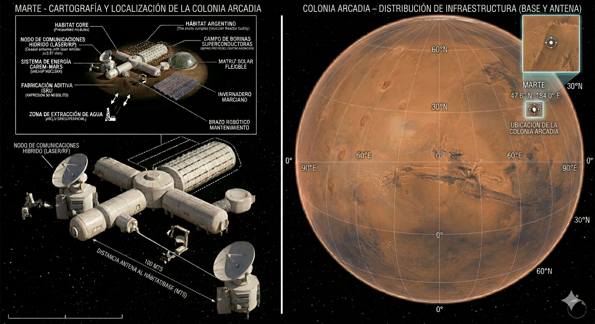

Hábitat Autónomo y Regenerativo para Misiones Prolongadas
Hackathon Argentina Espacial 2026
Arcadia Planitia, Marte | Coordenadas: 47.6° N, 184.0° E
El Código Marte es el primer ecosistema autónomo extraterrestre de origen argentino. Sistema integrado de soporte vital diseñado para garantizar la supervivencia de 4-6 astronautas durante 18-36 meses en Arcadia Planitia, donde el hielo subsuperficial está confirmado a solo 1-3 metros de profundidad.
Implementado en Rust, C++ y Python con tecnologías argentinas de vanguardia: INVAP + UNLP (reactores nucleares), CONAE + UNLP (comunicaciones espaciales), CONICET (biotecnología), INTA (agricultura extrema).

El sistema de comunicaciones cuánticas representa la colaboración entre Argentina e IBM para crear la infraestructura de comunicaciones espaciales más segura y rápida jamás diseñada. La tecnología de cifrado post-cuántico garantiza que las comunicaciones permanezcan seguras incluso ante el desarrollo futuro de computadoras cuánticas capaces de romper el cifrado tradicional.
Ventajas clave: Velocidad de gigabits/segundo en condiciones óptimas, seguridad cuántica inviolable, redundancia automática ante condiciones adversas, y capacidad de expansión para futuras misiones a Marte y más allá.
index.html → "Open with Live Server"
Simplemente abre cualquier archivo .html en tu navegador.
Todas las demos funcionan sin servidor.
El módulo de biosoporte provee el 35-50% del aporte calórico de la tripulación mediante cultivos en ambiente controlado (CEA). Tecnología INTA de agricultura de precisión en ambientes extremos.